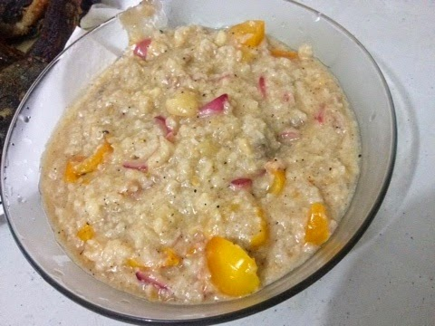
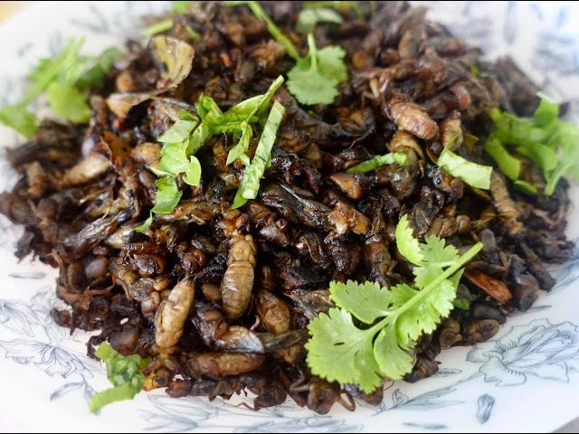
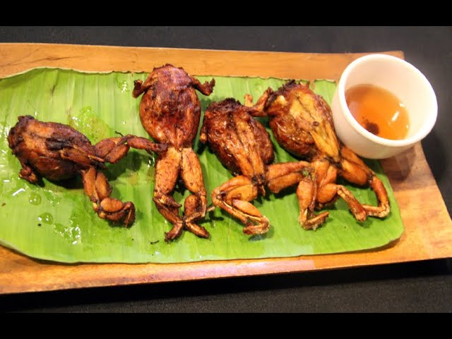

Buro
It is typically made out of rice porridge and a chosen seafood whose flavor is imparted into the paste.

Kamaru
made of mole crickets, which are often sautéed in garlic, onion, tomatoes., then simmered in vinegar.

Betute
Dressed frog stuffed with minced frog meat or pork and some finely chopped ingredients.

Kalderetang Barag
A spicy monitor lizard stew